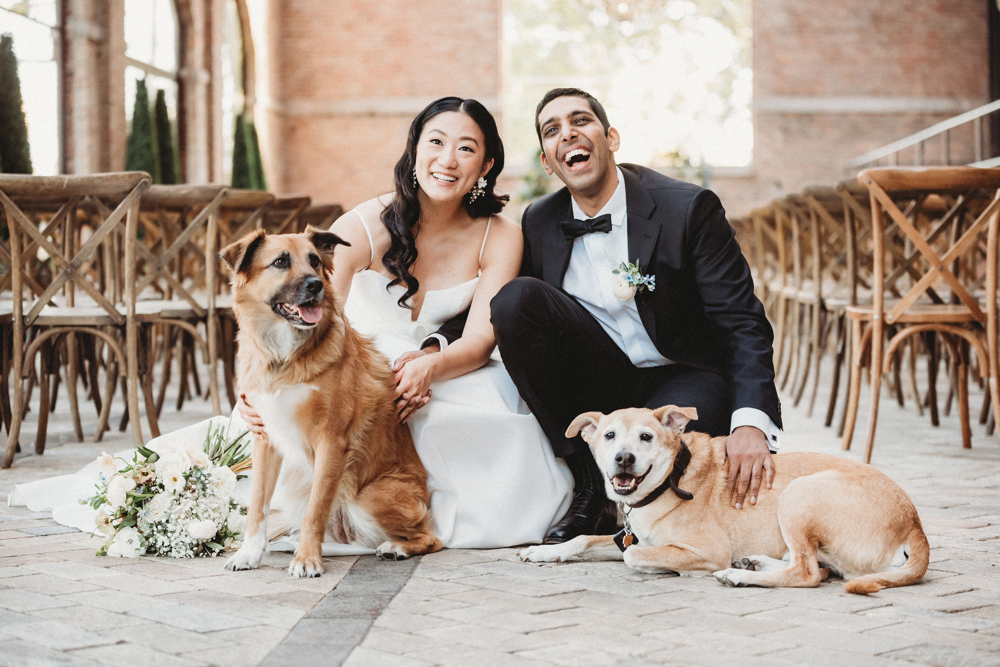

I
Howdy!
I am a physician and scientist, in continual training for both.
I’m initially received my baccalaureate in linguistics and behavioral neuroscience from Emory University.
I returned to Texas to receive my doctorate from Texas A&M University.
I completed my initial clinical training as a resident physician of the J. Willis Hurst Internal Medicine Residency program at Emory University. I subsequently completed by initial research training at Emory in the Rollins School of Public Health, receiving a NIH-TL1 award and completing my master’s degree.
I then moved to Chicago to for further clinical training as a cardiology fellow at the University of Illinois at Chicago and the Jesse Brown VA. I was awarded and an NIH-F32 award and completed it on the research track as part of the institutional T32 program.
I am now moving to the University of Utah to (hopefully) complete my training in cardiac electrophysiology.
II
I am a husband to a beautiful and kind and wonderful wife, who has supported me every step of the way.

Together, we are the dog-parents to our super-smart and super-sassy dogs, Harper and Ripley.
III
I …